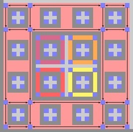

Silvère Gangloff
Post-doctoral researcher at University of Wisconsin-Madison, Department of psychiatry.
Ph.D. in mathematics
Curiculum vitae. Mail: first.last@gmx.com
Silvère Gangloff
Post-doctoral researcher at University of Wisconsin-Madison, Department of psychiatry.
Ph.D. in mathematics
Curiculum vitae. Mail: first.last@gmx.com
Research
"This basin was of great depth, but so transparent was the water that the bottom, which seemed to consist of a thick mass of small round alabaster pebbles, was distinctly visible by glimpses—that is to say, whenever the eye could permit itself not to see, far down in the inverted heaven, the duplicate blooming of the hills." - E.A. Poe, in The domain of Arnheim.
Keywords: dynamical systems, multidimensional subshifts of finite type, entropy, computability, turing machines, statistical
physics, square ice, structure of conscious information processing, organisedness of dynamical systems, integrated information.
Here is a description of my past research,
here one of my research projects, and here
a description of some teaching principles I believe in. One can find a history of my writting on page "Research documents",
and information and archives on the work group "Exact computation of topological entropy of multidimensional
subshifts of finite type" on page "Work group", and a commented bibliography
related to my current and past research on page "Bibliography".